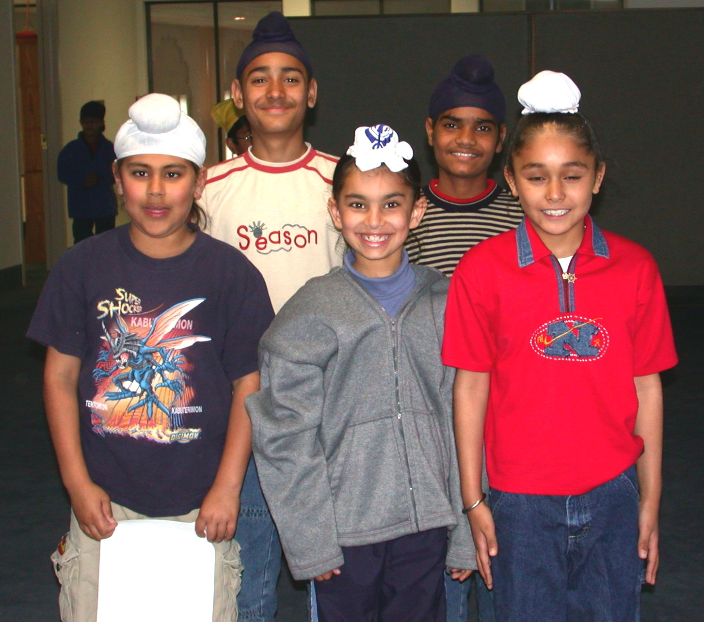

<HTML>
<HEAD>
<TITLE>Information About Sikhs in America </TITLE>
<META http-equiv="Content-Type" content="text/html; charset=iso-8859-1">
</HEAD>

<BODY bgcolor="#FFFFFF" background="images/uback.gif">
<P>&nbsp;</P>
<h1 align="center"><font color="#000099"><a name="top"></a>Information About Sikhs in America <br>
  for Educational Purpose <br>
</font></h1>
<div align="CENTER"> 
  <p></p>
</div>
<P align="center"> <b></b> </P>
<p align="left"><FONT size="5">Sikhs from Punjab and India started migrating to 
  the North <BR>
  American West Coast in 1899?</FONT></p>
<b></b>
<P><FONT size="5">Twenty-two million Sikhs worldwide trace the origin of their 
  religion to Punjab. </FONT> </P>
<P> </P>
<b></b>
<P><FONT size="5">Sikhism is the fifth largest religion in the world.</FONT></P>
<P><FONT size="5">99% of the people who wear turbins in America are Sikh. </FONT></P>
<p><b></b>
</p>
<p><font face="Times New Roman" size="+1" color = "#0033FF" ><b>Introduction</b></font> 
</p>
<p> 
<div align = "left"><font face="Times New Roman" size="+1" >In 1899, Sikhs from 
  Punjab region of India started migrating to Pacific Coast. It is estimated that 
  7,348 Indians, mostly Sikh, migrated to the United States and Canada between 
  1899 and 1920. Many had joined the British army and fought in World War I and 
  had served in the trenches of Western Europe. This experience opened new possibilities 
  to the Sikhs helped them to migrate to Hong Kong, China and the United States. 
  Crossing the Pacific Ocean they arrived on the West Coast of North America in 
  search of railroad, lumber and agricultural jobs. Sikhs with their love of farming 
  used their experience in agriculture to also establish themselves in the United 
  States.</font></div>
<p></p>
<p> 
<div align = "left"><font face="Times New Roman" size="+1">Punjabi settlements 
  began in farming lands in the Sacramento valley, San Joaquin Valley and in the 
  Imperial Valley in California. Most Sikhs worked here for a few years and established 
  permanenet homes. In 1909, four hundred sikhs worked in the by 1919, about 60% 
  of the arable land in the Imperial Valley was owned by non-residents resulting 
  in tenant farmers running 88% of all ranches by 1924. Today, in Yuba and Sutter 
  Counties, Sikh farmers grow 95% of the peaches, 60% of the prunes and 20% of 
  the almonds and walnuts. In the Bakersfield and Fresno area, 20% of the grapes 
  are grown by Sikhs. Showing great initiative, Sikhs were able to earn a regular 
  profit from the land without supervision and were not content to remain just 
  laborers anymore, so they started loans and pooling money to lease land. In 
  places such as Fresno, ranchers considered Punjabis reliable in financial dealing 
  and as Sikhs acquired som! e capital, their reputations for being hard workers 
  and reliable borrowers was established. Many Punjabis decided to stay in the 
  Imperial Valley and El Centro had at one time a mayor who was a third generation 
  Punjabi-Mexican, his name was David Singh Dhillon.</font></div>
<p> 
<div align = "left"><font face="Times New Roman" size="+1">Congressman Dalip Singh 
  Saund, a Sikh, was the first Asian American to be elected to the US Congress 
  and to date remains the only Indian American to hold such office. He was elected 
  in 1956 from the 29th Congressional District which includes Riverside and Imperial 
  Counties. Congressman Saund was reelected twice.</font></div>
<p></p>
<p> 
<div align = "left"><font face="Times New Roman" size="+1">Long apart of the California 
  landscape and well established as farmers, businessmen and solid citizens to 
  place of Sikhs in our community changed dramatically on September 11th, 2001. 
  Sikhs have had their identities mistaken due to their appearance, misidentified 
  by their clothing, beards, and turbans. </font></div>
<p><b></b>
</p>
<p><font face="Times New Roman" size="+1"><b>What is sikhism?</b> </font> 
</p>
<div align=left> 
  <p><font face="Times New Roman" size="+1"><br>
    Sikhism is one of the youngest of world religions. It is barely over 500 years 
    old. Its founder, Guru Nanak, was born in 1469. Guru Nanak spread a simple 
    message of "Ek Onkar": we are all one, created by One Creator of all Creation. 
    This was at a time when India was being torn apart by castes, sectarianism, 
    religious factions, and fanaticism. He aligned with no religion, and respected 
    all religions. He expressed the reality that there is one God and many paths, 
    and the name of God is Truth, "Sat Nam." <br>
    <br>
    Guru Nanak's followers were sikhs(students of Truth). He taught them to bow 
    only before God. He encouraged then to live thier lives in direct consciousness 
    of God, experinecing no separation. Guru Nanak opposed superstition, injustice, 
    and hypocrisy and inspired seekers by singing the divine songs which touched 
    the hearts of the most callous listeners. These songs were recorded by hand, 
    and formed the beginnings of th Sikhs' scared writings, later to become the 
    Guru Granth Sahib (Sikh Bible).</font></p>
  <b></b>
  <P> 
  <DIV align=left><FONT face="Times New Roman" size="+1"> <B>Guru Nanak's Way 
    of Life</B> <BR>
    Nam Japan: To wake up each day before sunrise, clean the body, meditate on 
    God's Name and recite the Guru's hymns to clean the mind. Throughout the day, 
    continuously remember God's Name with every breath.</FONT></DIV>
  <P></P>
  <P> 
  <DIV align=left><FONT face="Times New Roman" size="+1"><B>Kirat Karni</B>: To 
    work and earn by the sweat of the brow, live a family member's life, and practice 
    truthfulness and honesty in all dealings.</FONT></DIV>
  <P></P>
  <P> 
  <DIV align=left> 
    <P><FONT face="Times New Roman" size="+1"><B>Vand ke Chakna</B>: To share 
      the fruits of one's labor with others before considering oneself. Thus, 
      to live as an inspiration and a supporter of the entire community.</FONT></P>
    <b></b>
    <P> 
    <DIV align=left><FONT face="Times New Roman" size="+1"> <B>The Khalsa</B> 
      <BR>
      The Khalsa is a spiritual brotherhood and sisterhood devoted to purity of 
      thought and action created by Guru Gobind Singh, who was the last Guru of 
      the Sikhs. In order to preserve one's commitment to the Khalsa and help 
      maintain an elevated state of consciousness, every baptized Sikh vows to 
      wear the Five K's:</FONT></DIV>
    <P></P>
    <P> 
    <DIV align=left><FONT face="Times New Roman" size="+1"><B>Kesh</B>: uncut 
      hair and beard, as given by God, to sustain him or her in higher consciousness. 
      The Kesh is often kept in a turban, the crown of spirituality.</FONT></DIV>
    <P></P>
    <P> 
    <DIV align=left><FONT face="Times New Roman" size="+1"><B>Kanga</B>: a wooden 
      comb to properly groom the hair as a symbol of cleanliness.</FONT></DIV>
    <P></P>
    <P> 
    <DIV align=left><FONT face="Times New Roman" size="+1"><B>Kachera</B>: specifically 
      made cotton underwear as a reminder of the commitment to purity.</FONT></DIV>
    <P></P>
    <P> 
    <DIV align=left><FONT face="Times New Roman" size="+1"><B>Kara</B>: steel 
      bracelet signifying bondage to Truth and freedom from every other entanglement.</FONT></DIV>
    <P></P>
    <P> 
    <DIV align=left><FONT face="Times New Roman" size="+1"><B>Kirpan</B>: the 
      sword with which the Khalsa is committed to righteously defend the fine 
      line of the Truth.</FONT></DIV>
    <P></P>
    <b></b>
    <DIV align=left> 
      <P><FONT face="Times New Roman" size="+1"><B>Philosophy and Beliefs</B> 
        </FONT></P>
      <P><FONT face="Times New Roman" size="+1"></FONT><FONT face="Times New Roman" size="+1"><BR>
        EK Onkar - There is only one God. He is the same for all people, of all 
        faiths.</FONT></P>
    </DIV>
    <P></P>
    <P> 
    <DIV align=left><FONT face="Times New Roman" size="+1">The soul goes through 
      many cycles of births and deaths; the purpose of human form is to lead an 
      exemplary existence and merge with God.</FONT></DIV>
    <P></P>
    <P> 
    <DIV align=left><FONT face="Times New Roman" size="+1">Sikhism conderms blind 
      rituals such as fasting, visiting places of pilgrimage, superstitions, worship 
      of the dead, idol worship.</FONT></DIV>
    <P></P>
    <P> 
    <DIV align=left> 
      <P><FONT face="Times New Roman" size="+1">Sikhism preaches that people of 
        different races, religions, or sex are all equal in the eyes of God. It 
        teaches the full equality of men and women. Women can participate in any 
        religious function or perform any Sikh ceremony or lead the congregation 
        in prayer.</FONT></P>
    </DIV>
  </DIV>
</div>
<b></b>
<P><FONT size="5">Sikh Temple West Sacramento</FONT></P>
<P></P>
<P>&nbsp;</P>
<b></b>
<p><font color="#000099">SIKH CULTURE</font></p>
<p><a name="q1"></a> <font face="Times New Roman" size="+1"> <b>Why all Sikhs 
  are named Singh and Kaur?</b> <br>
  Although all male Sikhs are Singhs and all female Sikhs are Kaurs, not all Singhs 
  and Kaurs are Sikhs. The word Singh means a lion; its female counterpart Kaur 
  means both princess and lioness. Both were common amongst Hindus long before 
  Guru Gobind Singh made them obligatory for his followers as a way to make them 
  into one casteless fraternity and to emphasize the martial traits which he hoped 
  to infuse in them. Punjabi American Festival '96 pp. 5</font> </p>
<p></p>
<h2 align="center"><b></b></h2>
<a name="q2"></a> <font face="Times New Roman" size="+1"><b>Why Sikhs wear turbans?</b> 
</font> 
<div align = "left"> 
  <p><font face="Times New Roman" size="+1"><br>
    To an orthodox Sikh with unshorn hair, to appear in public without a turban 
    is considered rude. Turbans come in many shapes and sizes, with the standard 
    length about 20 feet. Contrary to belief, the color of a Sikh's turban does 
    not really signify anything, although older people and people in mourning 
    will often wear white and pink is popular for weddings. It takes no more than 
    a minute or two to tie a turban. There are innumerable styles of trying the 
    turban, from careless to meticulous. Some people let a portion of the turban 
    dangle over the spine like pony tails. Turbans have other benefits: they help 
    keep the head cool in a hot climate.</font></p>
  <p><FONT face="Times New Roman, Times, serif" size="+1">Why Sikhs Wear a Turban? 
    The dastaar, as the Sikh turban is known, is an article of faith that is central 
    to Sikhism, not to be regarded as mere cultural paraphernalia! </FONT></p>
  <p><FONT face="Times New Roman, Times, serif" size="+1">When a Sikh man or woman 
    dons a turban, the turban ceases to be just a piece of cloth and becomes one 
    and the same with the Sikh's head. The turban as well as the other articles 
    of faith worn by Sikhs have an immense spiritual as well as temporal significance. 
    The symbolisms of wearing a turban are many from it being regarded as a symbol 
    of sovereignty, dedication, self-respect, courage and piety but the reason 
    all practicing Sikhs wear the turban is just one - out of love and obedience 
    of the wishes of the founders of their faith. </FONT></p>
  <p><FONT face="Times New Roman, Times, serif" size="+1">The turban's importance 
    can be found in just about every culture and religion, starting with the ancient 
    Babylonians to western religions such as Judiaism, Christianity, and Islam, 
    as well as eastern traditions. The Old Testament proclaims, "Once they enter 
    the gates of the court", implying God's court, "they are to wear linen vestments. 
    They shall wear linen turban." </FONT></p>
  <p><FONT face="Times New Roman, Times, serif" size="+1">Elsewhere in the Old 
    Testament, the significance of the turban is further highlighted:<BR>
    He put the turban upon his head and set the gold rosette as symbol of holy 
    dedication on the front of the turban as the Lord had commanded him. Moses 
    then took the anointing oil, anointed the Tabernacle, and all that was within 
    it and consecrated it. (Leviticus 8,9) </FONT></p>
  <p><FONT face="Times New Roman, Times, serif" size="+1">Set the turban on his 
    head and the symbol of holy dedication on the turban. Take the anointing oil, 
    pour it on his head and anoint him. (Exodus 29-6) </FONT></p>
  <p><FONT face="Times New Roman, Times, serif" size="+1">The turban, since ancient 
    times, has been of significant import in the Punjab, the land of the five 
    rivers and the birthplace of Sikhism. There was a time when only kings, royalty, 
    and those of high stature wore turbans. Two people would trade their turbans 
    to show love or friendship towards each other. </FONT></p>
  <p><FONT face="Times New Roman, Times, serif" size="+1">At the time of Sikhism's 
    birth, the majority of people in India, and even today, comprised the lower 
    castes, mainly composed of peasants, laborers and servants. Many were literally 
    owned by the upper castes and were severely maltreated. The Sikh Gurus (prophets/teachers) 
    sought to uplift the downtrodden and make them the equals of the highest of 
    the high. Guru Nanak, the founder of the Sikh faith, states in his divine 
    revelation: </FONT></p>
  <p><FONT face="Times New Roman, Times, serif" size="+1">"Nanak seeks the company 
    of the lowest of the low class, the very lowest of the low. Where the lowly 
    are cared for, there lies the Grace of the Merciful Bestower." </FONT></p>
  <p><FONT face="Times New Roman, Times, serif" size="+1">The Sikh Gurus sought 
    to end all caste distinctions and vehemently opposed stratification of society 
    by any means. They diligently worked to create an egalitarian society dedicated 
    to justice and equality. The turban is certainly a gift of love from the founders 
    of the Sikh religion and is symbolic of sovereignty that is of Divine concession. 
    The turban has been an integral part of the Sikh Tradition since the time 
    of Guru Nanak Dev. Historical accounts relay to us that all Sikh Gurus wore 
    turbans and their followers --Sikhs-- have been wearing them since the formation 
    of the faith. </FONT></p>
  <p><FONT face="Times New Roman, Times, serif" size="+1">The turban serves as 
    a mark of commitment to the Sikh Gurus. It distinguishes a Sikh as an instrument 
    of the Guru and decrees accountability for certain spiritual and temporal 
    duties. It is a mark of the Guru and declares that the Sikh wearing a turban 
    is a servant of the Divine Presence. </FONT></p>
  <p><FONT face="Times New Roman, Times, serif" size="+1">Wearing the turban gives 
    much inner strength as well. Sikhs take this gift of the Guru with them everywhere 
    they go. Just by being exposed to this regal quality, their attitudes and 
    psyche get shaped in a certain way. At the same time, there is a great deal 
    of responsibility accompanied by the turban. A person's actions are no longer 
    just tied to him or her. Since Sikhs who wear the turban represent the Guru, 
    their actions too reflect on the Guru and the Sikh Nation. In this sense, 
    the turban serves to increase a Sikh's commitment to Sikhism and lends to 
    him or her becoming a more disciplined and virtuous person. </FONT></p>
  <p><FONT face="Times New Roman, Times, serif" size="+1">Prophet Mohammed in 
    one of his hadiths states that the turban is a frontier between faith and 
    unbelief. This aptly describes the significance of the turban for a Sikh as 
    well. It is a true mark of sovereignty and a crown. </FONT></p>
  <p><FONT face="Times New Roman, Times, serif" size="+1">Due to its distinguishable 
    nature, the turban has often been a target during times of persecution. There 
    have been times in the relatively short history of the Sikh nation that if 
    one wore a turban, it was reason enough for his or head to be cut off by the 
    tyrannical regimes of the time. The collective response of the Sikh Nation 
    was "You may take off my head but not my turban." When many discarded their 
    turbans, those that proudly adorned them in those times, even though it meant 
    certain death, fully appreciated its significance. After all, it is in times 
    of adversity that faith is tested and one must prove true to core values. 
    By adorning their turbans, Sikhs serve as ambassadors of the Sikh faith and 
    commit externally to following the path laid down by the Sikh Gurus. True 
    submission, of course, occurs internally. </FONT></p>
  <p><FONT face="Times New Roman, Times, serif" size="+1">The next time you see 
    a Sikh, greet him or her and know that the turban you see is the same turban 
    and stood up against oppression against those identified as lower castes in 
    India, tyranny in WWI, the Nazi empire in WWII. As Sikhs tie their turbans 
    each day, they should be heedful that it represents a very real commitment 
    to the founders of the Sikh faith. The turban is deeply intertwined with the 
    Sikh identity and is a manifestation of the mission given to all Sikhs - to 
    act as a divine prince or princess by standing firm against tyranny and protecting 
    the downtrodden. </FONT></p>
  <p>&nbsp;</p>
</div>
<BLOCKQUOTE> 
  <BLOCKQUOTE> 
    <BLOCKQUOTE> 
      <BLOCKQUOTE> 
        <BLOCKQUOTE> 
          <P><P:SLIDE
 coordsize="720,540"
 colors="#FFFFFF,#000000,#1C1C1C,#333399,#00E4A8,#FFCF01,#FF0000,#3333CC"
 masterhref="master12.xml"></P:SLIDE><br>
          </P>
        </BLOCKQUOTE>
      </BLOCKQUOTE>
    </BLOCKQUOTE>
  </BLOCKQUOTE>
</BLOCKQUOTE>
<h3><font face="Times New Roman" size="+1">Young children instead of wearing a 
  turban, they make a bun over their head.</font></h3>
<center>
  <font face="Times New Roman" size="+1"></font> 
</center>
<h3><font face="Times New Roman" size="+1">Adults wear turban of different colors.</font></h3>
<center>
  <p><font face="Times New Roman" size="+1"><br>
  </font></p>
</center>
<b></b>
<P>Sunday School Teachers</P>
<P></P>
<b></b>
<P></P>
<p>&nbsp;</p>
<b></b>
<p></p>
<b></b>
<p>Sikhs Meet President Bush</p>
<table width="200">
  <tr>
    <td></td>
  </tr>
</table>
<p>&nbsp;</p>
<P>&nbsp;</P>
<P><strong><em>Also See 


 Basics of the Sikh Religion for non Sikhs</em></strong></P>
<P>&nbsp;</P>
<P><strong>Basics of the Sikh Religion </strong></P>
<p><strong>Origin of Sikhism </strong>: Sikhism is a revealed, distinct, and unique religion. It is the world's fifth largest religion, and the youngest of the great religions of the world. It was founded in 1469 by Guru Nanak Dev in Northern India . After a revelatory experience at the age of 37, Guru Nanak traveled extensively to spread his word. Guru in Sikhism is the messenger of God and the Divine Teacher. The first Sikh Guru was succeeded by nine Gurus. All the ten Sikh Gurus nurtured Sikhism for 239 years. <em>Sikh </em> means a disciples-seeker of truth. At that time, India was enmeshed in slavery, inequalities, abuses and exploitation of the poor, and political and religious turmoil. </p>
<p>Against this background, <strong>Guru Nanak spoke out with a message </strong> of equality of mankind, devotion to One God who is to be remembered at all times, and righteous living. His teachings denounce social injustice, superstitions, and blind rituals. These teachings flew in the face of the customs of the time, which believed certain castes and all women to be inferior. The Sikh scripture is named Sri <em>Guru Granth Sahib </em>and was <strong><em>completed during the lifetime </em></strong> of the Founders of the Sikh religion. It is universal scripture that contains the Word of God. A unique feature of the Sikh Scripture is that it enshrines the Word of God as revealed to the Sikh Gurus. It also enshrines hymns of many saints from a variety of faiths including Hinduism and Islam. The 10 th Guru, Guru Gobind Singh left for heavenly abode in 1708. He instructed Sikhs that there would be no further human Guru, but instead they should simply follow the teachings of Guru Granth Sahib (as their ultimate divine guide). </p>
<p><strong>Basics of Sikhism </strong>: Sikhs, believe in one God, the Creator of all Creation. He is Eternal. Truth is His Name. Guru Nanak taught that human life is the opportunity for spiritual union with the Supreme Being and this stage of enlightenment can be achieved by God's grace. Any person, of whatever intellectual or economic level, may become enlightened through a life of single-minded devotion to God. Sikhs believe that one can attain spiritual enlightenment while staying engaged in family and in worldly affairs, while working for the social uplift of others. All races and both sexes are not only equal in the eyes of God, but have equal rights to participate in life. Sikhism is not an exclusive religion. It respects other religions. It sees other faiths as equal paths to God in their own way. </p>
<p>A strong family life is promoted. Sikhs are required to practice love, compassion, universal brotherhood, universal peace and prosperity. The use of alcohol, intoxicating drugs, and smoking are prohibited, as is adultery. </p>
<p><strong>The Khalsa order </strong> (“The Pure”) initiated by Guru Nanak Dev was finally revealed by the last Guru. Those of this order are soldier-saints who are to uphold the highest Sikh virtues of commitment, dedication, and social consciousness. Those who chose to do this must undergo Amrit Chhakna (Sikh initiation ceremony). The Sikhs are required to adhere to <em>The Sikh Code of Conduct and Conventions (Sikh Reht Maryada) </em>. They are to wear the prescribed articles of the Sikh faith as of what they believe. One of the more noticeable of these is the uncut hair, which is covered with a turban. Hair (Kes) is considered endowment of Lord, and not to be cut from any part of the body. A wooden comb (Kangha) is worn to keep hair clean and tidy which represent a clean body and mind. The sword (Kirpan) signifies freedom, the indomitable spirit and defense of the oppressed. The steel bracelet (Kara) represents the eternity of God: worn around the hands it reminds one not to misuse them. The short breeches (Kacchehra) remind one to maintain modesty and self restrain. </p>
<p><strong>Worship </strong>: Sikhs have a deep reverence for the Shabad Guru (Word of God) contained in the Guru Granth Sahib. Sikhs do not worship any worldly objects. Sri Guru Granth Sahib is the central object of&nbsp;reverence in a Gurdwara. A free community kitchen (Langar) can be found at every Gurdwara (Sikh temple), which welcomes people of all faiths. This tradition follows the principles of selfless service, humility and equality begun by Guru Nanak. Harmandar Sahib ( Golden Temple ) at Amritsar in Punjab , India , is the core and nerve center of the Sikhs. </p>
<p><strong>Sikhism teaches </strong>: Sikhs believe that soul survives death and it is eternal. The goal of this life is to lead an exemplary existence so that one may merge with Supreme Soul. Sikhs should remember God at all times and practice living a virtuous and truthful life while balancing spiritual and temporal obligations. Sikhism stands for human liberty, equality and fraternity. The Sikhs pray daily for well-being of entire human race irrespective of caste, color or creed. </p>
<p><span class="gray"><a href="Sikhism.ppt">Sikhism.ppt</a></span></p>
<p><span class="gray"><a href="MoolMantar.ppt">Mool Mantar.ppt</a></span></p>
<p>&nbsp;</p>
<P>&nbsp;</P>
<P>&nbsp; </P>
<P>&nbsp;</P>
</BODY>
</HTML>
